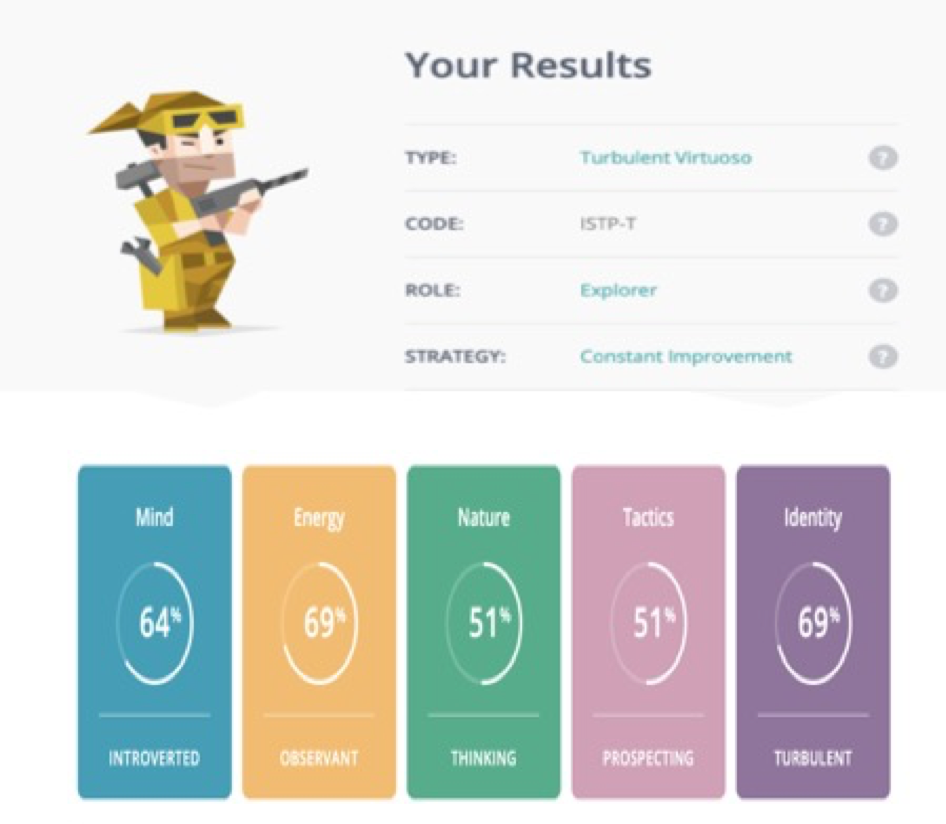
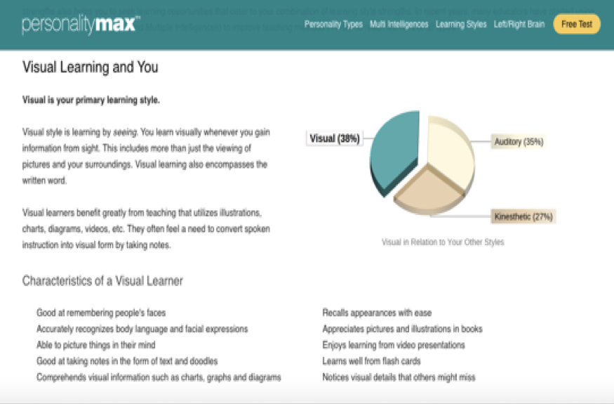
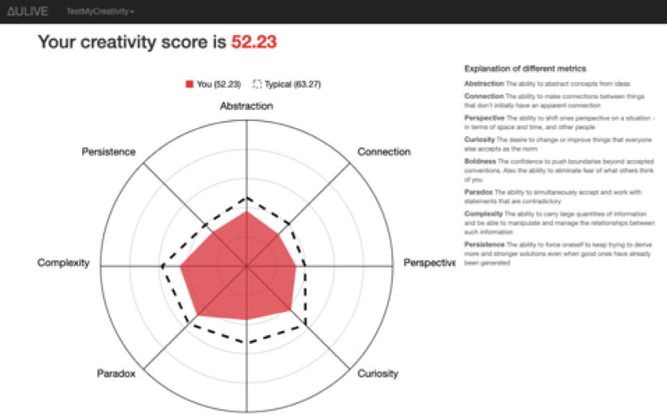
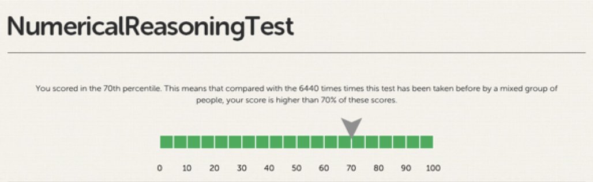

Personal Profile




1.What do the results of these tests mean for you?
I could see that most of features indicated in the test results are the same as my characteristics. By the way, these tests help me know more about my advantages and weaknesses, so I can identify more clearly which one is suitable with my jobs (good numerical reasoning skill, be introvert, etc), with my working and studying space (auditory/visual learning style) and which one is not (easy to change when seeing new things). Then, I am enabled to decide whether I need to change my personality or not, because sometimes my changes are needed, sometimes they are not. If it is necessary, I would try my best to figure out the way to make myself better and be more cooperative in a team.
2.How do you think these results may influence your behavior in a team?
First, in my opinion, my learning style is auditory/visual (visual is a bit higher) so I would listen and observe rather than communicate a lot; on the other hand, this does not mean that I will not talk anything. Whenever I have opinions, I definitely would express them to make the teamwork better. Next, my creativity result is not high, therefore, I am more suitable to be the supporter. In further explanation, if someone already has the original idea, I could give my opinions in order to develop it or state out its possibilities and drawbacks. Finally, a Virtuoso is described as a good problem-solver and I think that this is quite similar to me but I may not be up to the level that is written in the results. However, I still try my best to cope with my team and absolutely put my effort to solve all the problems and complete my given tasks as a team member..
3. How should you take this into account when forming a team?
Because of my learning style, I would consider to form a group that has a member that communicate more than me. Besides, my creativity is not high so I would be more suitable to be a good supporter rather than be an idea thinker, therefore, I desire to be able to work with a person who has a lot of ideas to develop. Although my MBTI test result indicates that I am a person that is easy to get change, I still take my responsibility for getting my tasks done while working in a team. I prefer comfortable working space so I hope that every member in a team could have their own task and support each other as well as possible.